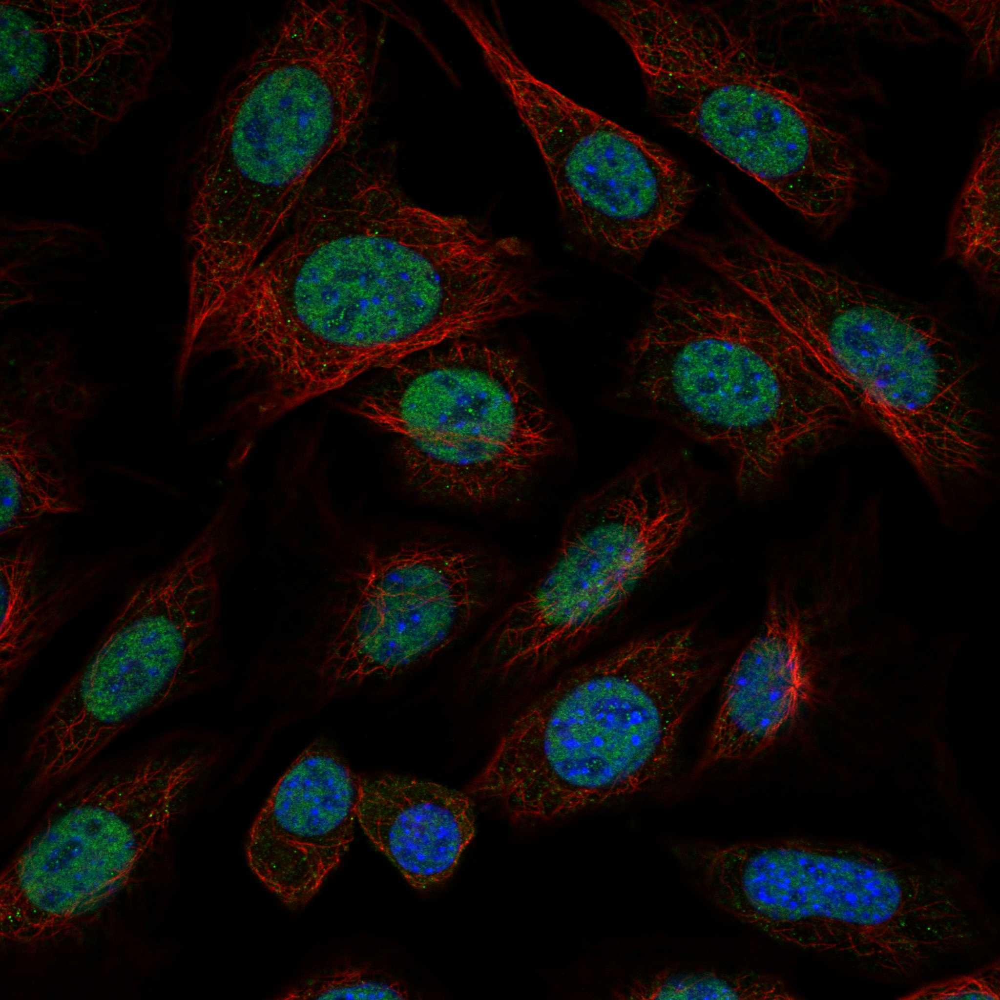
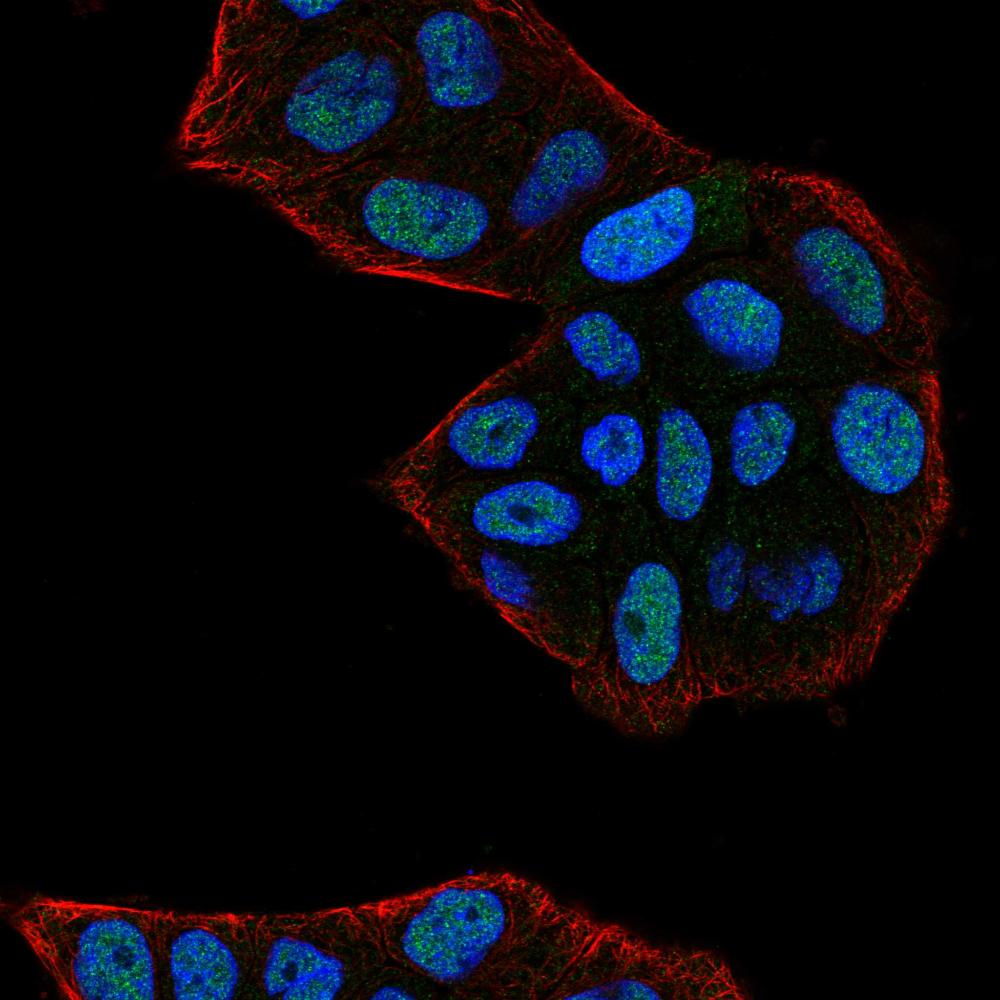
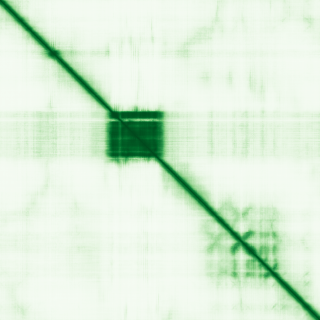

type: protein-evaluation gene: "ELF2" date: 2026-06-03 tags: [protein-scout, nuclear-protein, evaluation] status: scored ---
ELF2 核蛋白评估报告 (Full Re-evaluation)
1. 基本信息
| 项目 | 内容 |
|---|---|
| 基因名 / 别名 | ELF2 / NERF |
| 蛋白名称 | ETS-related transcription factor Elf-2 |
| 蛋白大小 | 593 aa / 64.0 kDa |
| UniProt ID | Q15723 |
| 评估日期 | 2026-06-03 |
IF 图像:  
2. 评分总览
| 维度 | 得分 | 满分 | 加权后 | 关键证据摘要 |
|---|---|---|---|---|
| 核定位特异性 | 7/10 | ×4 | 28 | HPA: Nucleoplasm; 额外: Nuclear bodies; UniProt: Nucleus |
| 蛋白大小 | 10/10 | ×1 | 10 | 593 aa / 64.0 kDa |
| 研究新颖性 | 4/10 | ×5 | 20 | PubMed strict=76 篇 (≤80→4) |
| 三维结构 | 6/10 | ×3 | 18 | AlphaFold v6 pLDDT=49.3; PDB: 无 |
| 调控结构域 | 7/10 | ×2 | 14 | InterPro: IPR000418, IPR046328, IPR022084, IPR036388, IPR036 |
| PPI 网络 | 3/10 | ×3 | 9 | STRING 15 partners; IntAct 15 interactions |
| 互证加分 | — | max +3 | 1.0 | PDB+AF+STRING+IntAct cross-validation |
| 原始总分 | 100.0/180 | |||
| 归一化总分 | 55.6/100 |
3. 详细分析
3.1 核定位证据
| 来源 | 定位 | 可信度 |
|---|---|---|
| Protein Atlas (IF) | Nucleoplasm; 额外: Nuclear bodies | Supported |
| UniProt | Nucleus | Swiss-Prot/TrEMBL |
IF 图像获取: IF图像已下载并嵌入 (2张)
GO Cellular Component:
- chromatin (GO:0000785)
- cytosol (GO:0005829)
- nuclear body (GO:0016604)
- nucleoplasm (GO:0005654)
- nucleus (GO:0005634)
结论: 主要核定位，HPA 可靠性良好，有辅助数据源支持。
3.2 蛋白大小评估
评价: 大小适中（200-800 aa），适合常规生化实验和结构解析。
3.3 研究现状
| 指标 | 数值 |
|---|---|
| PubMed strict count | 76 |
| PubMed broad count | 174 |
| 别名(未计入scoring) | Aliases observed but not used for scoring: NERF |
关键文献: 1. Epigenomic dissection of Alzheimer's disease pinpoints causal variants and reveals epigenome erosion.. *Cell*. PMID: 37774680 2. Targeted citrullination enables p53 binding to non-canonical sites.. *Molecular cell*. PMID: 41043392 3. Loss of ELF2 drives topotecan resistance in retinoblastoma revealed by genome-wide CRISPR-Cas9 screening.. *Cell death & disease*. PMID: 41436498 4. A novel peptide P1-121aa encoded by STK24P1 regulates vasculogenic mimicry via ELF2 phosphorylation in glioblastoma.. *Experimental neurology*. PMID: 37406957 5. B-Cell Receptor-Associated Protein 31 Regulates the Expression of Valosin-Containing Protein Through Elf2.. *Cellular physiology and biochemistry : international journal of experimental cellular physiology, biochemistry, and pharmacology*. PMID: 30504720
评价: 已有一定研究基础，但仍存在niche空间。
3.4 三维结构分析
| 指标 | 数值 |
|---|---|
| AlphaFold 版本 | v6 |
| AlphaFold 平均 pLDDT | 49.3 |
| 高置信度残基 (pLDDT>90) 占比 | 12.5% |
| 置信残基 (pLDDT 70-90) 占比 | 3.4% |
| 中等置信 (pLDDT 50-70) 占比 | 8.3% |
| 低置信 (pLDDT<50) 占比 | 75.9% |
| 有序区域 (pLDDT>70) 占比 | 15.9% |
| 可用 PDB 条目 | 无 |
PAE (Predicted Aligned Error): 
评价: AlphaFold 预测质量有限（pLDDT=49.3），有序残基占 15.9%。
3.5 结构域分析
| 来源 | 结构域 |
|---|---|
| InterPro/Pfam | InterPro: IPR000418, IPR046328, IPR022084, IPR036388, IPR036390; Pfam: PF12310, PF00178 |
染色质调控潜力分析: 存在已知结构域注释，可作为功能研究的结构基础。
3.6 PPI 网络
STRING 预测互作 (combined score >0.4):
| Partner | Combined Score | Experimental | 功能类别 |
|---|---|---|---|
| RUNX1 | 0.875 | 0.519 | — |
| ZNF821 | 0.658 | 0.068 | — |
| BLK | 0.598 | 0.074 | — |
| ELF1 | 0.581 | 0.057 | — |
| MYC | 0.540 | 0.185 | — |
| PAX5 | 0.521 | 0.000 | — |
| ZBTB26 | 0.504 | 0.068 | — |
| CBFB | 0.499 | 0.000 | — |
| STAT3 | 0.484 | 0.000 | — |
| KLF6 | 0.480 | 0.068 | — |
实验验证互作 (IntAct):
| Partner | 方法 | PMID | |
|---|---|---|---|
| Ephb2 | psi-mi:"MI:0114"(x-ray crystallography) | pubmed:11780069 | |
| Efnb2 | psi-mi:"MI:0007"(anti tag coimmunoprecipitation) | imex:IM-11922 | pubmed:18555774 |
| Epha4 | psi-mi:"MI:0405"(competition binding) | imex:IM-11922 | pubmed:18555774 |
| ENSP00000510098.1 | psi-mi:"MI:0398"(two hybrid pooling approach) | imex:IM-13779 | pubmed:20711500 |
| clpP2 | psi-mi:"MI:0398"(two hybrid pooling approach) | imex:IM-13779 | pubmed:20711500 |
| ugpC | psi-mi:"MI:0398"(two hybrid pooling approach) | imex:IM-13779 | pubmed:20711500 |
| H3C1 | psi-mi:"MI:1314"(proximity-dependent biotin identi | pubmed:29568061 | imex:IM-26301 |
| LMNA | psi-mi:"MI:1314"(proximity-dependent biotin identi | pubmed:29568061 | imex:IM-26301 |
| PRPS1 | psi-mi:"MI:0007"(anti tag coimmunoprecipitation) | pubmed:28514442 | doi:10.1038/na |
| - | psi-mi:"MI:0432"(one hybrid) | imex:IM-26689 | pubmed:31481462 |
PPI 互证分析:
- STRING + IntAct 均有数据
- STRING partners: 15，IntAct interactions: 15
- 调控相关比例: 0 / 15 = 0%
评价: STRING 15 个预测互作，IntAct 15 个实验互作。调控相关配体占比 0%。
3.7 多库互证
| 维度 | 来源 | 结果 | 是否一致 |
|---|---|---|---|
| 三维结构 | AlphaFold pLDDT=49.3 + PDB: 无 | pLDDT=49.3, v6 | 仅预测 |
| 定位 | UniProt + HPA | Nucleus / Nucleoplasm; 额外: Nuclear bodies | 一致 |
| PPI | STRING + IntAct | 15 + 15 interactions | 数据充分 |
互证加分明细:
- PDB + AlphaFold 双源验证: +0
- 多库定位一致 (3源): +0.5
- STRING + IntAct 双源验证: +0.5
- 结构域 + AlphaFold 质量: +0
- PDB 多条目覆盖: +0
总分: +1.0 / max +3
4. 总体评价
推荐等级: ⭐⭐⭐
核心优势: 1. ELF2 — ETS-related transcription factor Elf-2，已有一定研究基础，但仍存在niche空间。 2. 蛋白大小593 aa，大小适中（200-800 aa），适合常规生化实验和结构解析。
风险/不确定性: 1. PubMed 76 篇，已有一定研究基础 2. AlphaFold 预测质量一般（pLDDT=49.3），需要更多实验结构验证
下一步建议:
- [ ] 查阅最新关键文献补充研究背景
- [ ] 获取 Protein Atlas IF 图像确认亚细胞定位
- [ ] 设计体外实验验证核定位及潜在调控功能
5. 数据来源
- UniProt: https://www.uniprot.org/uniprotkb/Q15723
- Protein Atlas: https://www.proteinatlas.org/ENSG00000109381-ELF2/subcellular
- PubMed: https://pubmed.ncbi.nlm.nih.gov/?term=ELF2
- AlphaFold: https://alphafold.ebi.ac.uk/entry/Q15723
- STRING: https://string-db.org/network/9606.ENSP00000
- Data fetched live: 2026-06-03